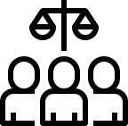
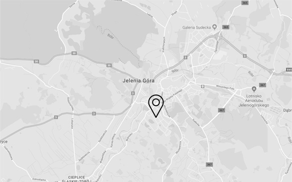
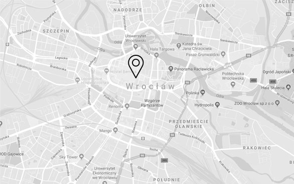

Napisz do mnie
01.
Praktyka dotycząca sporów sądowych obejmuje wszelkiego rodzaju sprawy dotyczące prawa cywilnego, gospodarczego oraz administracyjnego, prowadzone przed sądami powszechnymi lub organami administracyjnymi. Kancelaria reprezentuje klientów na każdym etapie postępowania.
W ramach praktyki dotyczącej sporów sądowych:
W ramach praktyki dotyczącej postępowania egzekucyjnego i zabezpieczającego:
02.
Kancelaria reprezentuje klientów zarówno w postępowaniu zabezpieczającym jak i postępowaniu egzekucyjnym.
03.

W Kancelarii świadczone są także usługi prawne z zakresu szeroko rozumianego prawa spółek, obejmującego swoim zakresem powstawanie spółek, ich funkcjonowanie, przekształcanie, a także likwidację.
W ramach praktyki dotyczącej prawa spółek:
04.
Kancelaria świadczy profesjonalne usługi prawne przeznaczone dla biznesu. Obsługa prawna
podmiotów gospodarczych świadczona przez Kancelarię to kompleksowe wsparcie dla każdego podmiotu
prowadzącego działalność gospodarczą. Nasza oferta skierowana jest do podmiotów gospodarczych mających
siedzibę czy prowadzących działalność na terenie całej Polski.
Kancelaria współpracuje z podmiotami gospodarczymi na zasadzie stałej obsługi prawnej firm, ale także
udziela doraźnego, incydentalnego wsparcia swym Klientom w zależności od ich potrzeb.
Kancelaria współpracuje z biurami rachunkowymi, doradcami podatkowymi, rzeczoznawcami, czy ekspertami, co
sprawia, że nasze doradztwo zawsze ma charakter kompleksowy.
Zadzwoń do mnie
788 788 788
W ramach praktyki dotyczącej obsługi przedsiębiorstw:
04.
Kancelaria wspiera dłużników, wobec których istnieją przesłanki do ogłoszenia upadłości, w tym w szczególności służy pomocą w zakresie:

ul. Nowakowska 14, 52-465 Jelenia Góra

ul. Nowakowska 14, 52-465 Wrocław
Jak można umówić spotkanie w kancelarii prawnej?
Gdzie znajduje się siedziba kancelarii adwokackiej?
Czy kancelaria prawna Aleksandra Polak działa tylko na terenie Wrocławia?
Jaki koszt usługi?